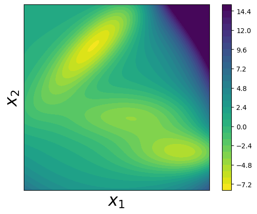
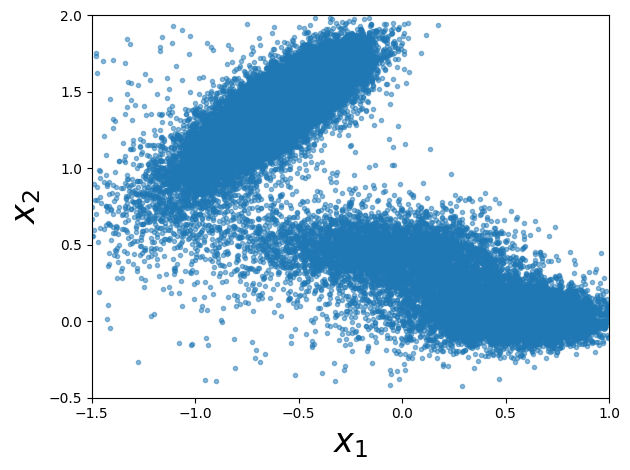
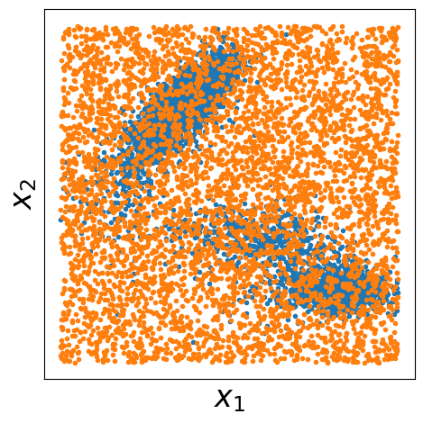
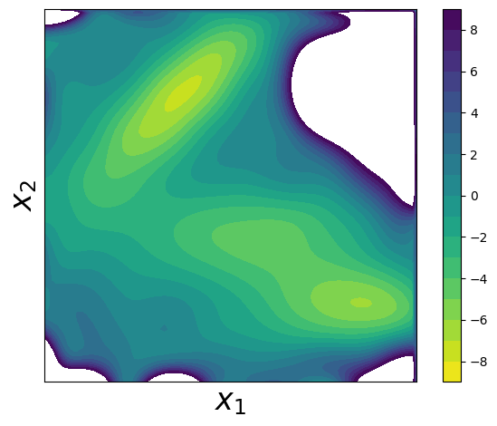

Müller Potential Tutorial#
This tutorial demonstrates how to use the PCCG library to learn complex energy landscapes through contrastive learning. We’ll work with the famous Müller potential, which is commonly used as a benchmark in molecular dynamics and sampling methods.
Step 1: Import Required Libraries#
First, let’s import all the necessary libraries:
[1]:
import torch
import torch.distributions as distributions
from pccg.splines import bs
from pccg.CL import contrastive_learning
import matplotlib.pyplot as plt
from matplotlib import cm
import numpy as np
torch.set_default_dtype(torch.double)
Step 2: Müller Potential Definition#
The Müller potential is defined as
\begin{equation*} U(x, y; \alpha) = \alpha \cdot \sum_{i=1}^{4}{A_i \cdot \exp( \left[ a_i \cdot (x-x^0_i)^2 + b_i \cdot (x-x^0_i)(y-y^0_i) + c_i \cdot (y-y^0_i)^2 \right] )} \end{equation*}
where \((A_1, A_2, A_3, A_4)\) = (-200, -100, -170, 15), \((a_1, a_2, a_3, a_4)\) = (-1, -1, -6.5, 0.7), \((b_1, b_2, b_3, b_4)\) = (0, 0, 11, 0.6),\((c_1, c_2, c_3, c_4)\) = (-10, -10, -6.5, 0.7), \((x^0_1, x^0_2, x^0_3, x^0_4)\) = (1, 0, -0.5, -1), and \((y^0_1, y^0_2, y^0_3, y^0_4)\) = (0, 0.5, 1.5, 1).
\(\alpha\) is a parameter that control the rugedness of the potential. In this tutorial, we will set it to 0.05.
Step 3: Implementation of the Müller Potential#
Now let’s implement the Müller potential function. This function computes the potential energy at any given point (x,y) in 2D space:
[2]:
def compute_Muller_potential(x, alpha):
A = (-200., -100., -170., 15.)
b = (0., 0., 11., 0.6)
ac = (x.new_tensor([-1.0, -10.0]),
x.new_tensor([-1.0, -10.0]),
x.new_tensor([-6.5, -6.5]),
x.new_tensor([0.7, 0.7]))
x0 = (x.new_tensor([ 1.0, 0.0]),
x.new_tensor([ 0.0, 0.5]),
x.new_tensor([-0.5, 1.5]),
x.new_tensor([-1.0, 1.0]))
U = 0
for i in range(4):
diff = x - x0[i]
U = U + A[i]*torch.exp(torch.sum(ac[i]*diff**2, -1) + b[i]*torch.prod(diff, -1))
U = alpha * U
return U
Step 4: Grid Generation Helper Function#
To visualize the potential surface, we need to create a grid of points over our domain of interest:
[3]:
def generate_grid(x1_min, x1_max, x2_min, x2_max, size = 100):
x1 = torch.linspace(x1_min, x1_max, size)
x2 = torch.linspace(x2_min, x2_max, size)
grid_x1, grid_x2 = torch.meshgrid(x1, x2, indexing="ij")
grid = torch.stack([grid_x1, grid_x2], dim = -1)
x = grid.reshape((-1, 2))
return x
Step 5: Set Parameters and Domain#
Let’s define our simulation parameters and the spatial domain we’ll work with:
[4]:
alpha = 0.05
x1_min, x1_max = -1.5, 1.0
x2_min, x2_max = -0.5, 2.0
Step 6: Visualize the True Müller Potential#
Let’s create a contour plot to visualize the true Müller potential energy surface:
[5]:
x = generate_grid(x1_min, x1_max, x2_min, x2_max)
fig, axes = plt.subplots()
alpha = 0.05
U = compute_Muller_potential(x, alpha)
U = U.reshape(100, 100)
U[U>15] = 15
U = U.T
plt.contourf(U, levels = 30, extent = (x1_min, x1_max, x2_min, x2_max), cmap = cm.viridis_r)
plt.xlabel(r"$x_1$", fontsize = 24)
plt.ylabel(r"$x_2$", fontsize = 24)
plt.colorbar()
plt.tight_layout()
axes.set_aspect('equal')
plt.tick_params(which='both', bottom=False, top=False, right = False, left = False, labelbottom=False, labelleft=False)

Step 7: Generate Training Data using Parallel Tempering#
To train our model, we need sample data from the Boltzmann distribution of the Müller potential. We’ll use parallel tempering (replica exchange) Monte Carlo sampling to efficiently explore the complex energy landscape:
Parallel tempering: We run multiple replicas at different temperatures (controlled by α values)
Replica exchange: Periodically swap configurations between adjacent temperature levels
Benefits: This helps the system escape local minima and sample from the full distribution
[6]:
num_reps = 10
alphas = torch.linspace(0.0, alpha, num_reps)
num_steps = 510000
x_record = []
accept_rate = 0
x = torch.stack((x1_min + torch.rand(num_reps)*(x1_max - x1_min),
x2_min + torch.rand(num_reps)*(x2_max - x2_min)),
dim = -1)
energy = compute_Muller_potential(x, 1.0)
for k in range(num_steps):
if (k + 1) % 100000 == 0:
print("idx of steps: {}".format(k))
## sampling within each replica
delta_x = torch.normal(0, 1, size = (num_reps, 2))*0.3
x_p = x + delta_x
energy_p = compute_Muller_potential(x_p, 1.0)
## accept based on energy
accept_prop = torch.exp(-alphas*(energy_p - energy))
accept_flag = torch.rand(num_reps) < accept_prop
## considering the bounding effects
accept_flag = accept_flag & torch.all(x_p > x_p.new_tensor([x1_min, x2_min]), -1) \
& torch.all(x_p < x_p.new_tensor([x1_max, x2_max]), -1)
x_p[~accept_flag] = x[~accept_flag]
energy_p[~accept_flag] = energy[~accept_flag]
x = x_p
energy = energy_p
## calculate overall accept rate
accept_rate = accept_rate + (accept_flag.float() - accept_rate)/(k+1)
## exchange
if k % 10 == 0:
for i in range(1, num_reps):
accept_prop = torch.exp((alphas[i] - alphas[i-1])*(energy[i] - energy[i-1]))
accept_flag = torch.rand(1) < accept_prop
if accept_flag.item():
tmp = x[i]
x[i] = x[i-1]
x[i-1] = tmp
tmp = energy[i]
energy[i] = energy[i-1]
energy[i-1] = tmp
if k >= 10000:
x_record.append(x.clone().numpy())
x_record = np.array(x_record)
idx of steps: 99999
idx of steps: 199999
idx of steps: 299999
idx of steps: 399999
idx of steps: 499999
Step 8: Visualize the Generated Samples#
Let’s plot the samples we generated from the Monte Carlo simulation. These samples should concentrate in the low-energy regions of the potential:
[7]:
x_samples = x_record[:, -1, :]
#### plot samples
fig = plt.figure()
fig.clf()
plt.plot(x_samples[:, 0], x_samples[:, 1], ".", alpha=0.5)
plt.xlim((x1_min, x1_max))
plt.ylim((x2_min, x2_max))
plt.xlabel(r"$x_1$", fontsize=24)
plt.ylabel(r"$x_2$", fontsize=24)
axes.set_aspect("equal")
plt.tight_layout()
plt.show()

Step 9: Prepare Data for Contrastive Learning#
For contrastive learning, we need both positive samples (from our target distribution) and negative samples (from a reference distribution). Here we:
Use our Monte Carlo samples as positive examples (data samples)
Generate uniform random samples as negative examples (noise samples)
Visualize both datasets to understand the contrast we’re learning
[8]:
xp = torch.from_numpy(x_samples)
num_samples_p = xp.shape[0]
## samples from q
num_samples_q = num_samples_p
q_dist = distributions.Independent(
distributions.Uniform(
low=torch.tensor([x1_min, x2_min]), high=torch.tensor([x1_max, x2_max])
),
1,
)
xq = q_dist.sample((num_samples_q,))
fig, axes = plt.subplots()
plt.plot(xp[::10, 0], xp[::10, 1], ".", label="data", markersize=6)
plt.plot(xq[::10, 0], xq[::10, 1], ".", label="noise", markersize=6)
plt.xlabel(r"$x_1$", fontsize=24)
plt.ylabel(r"$x_2$", fontsize=24)
plt.tick_params(
which="both",
bottom=False,
top=False,
right=False,
left=False,
labelbottom=False,
labelleft=False,
)
plt.tight_layout()
axes.set_aspect("equal")
plt.savefig("./output/data_and_noise_samples.png")

Step 10: Learn the Potential using Contrastive Learning#
Now comes the core of the PCCG method! We’ll:
Define B-spline basis functions: Create a flexible representation using tensor products of 1D B-splines
Set up basis functions: Transform our data points into the B-spline basis
Run contrastive learning: Use the
contrastive_learningfunction to find parameters θ that best distinguish between data and noise samplesReconstruct and visualize: Create the learned potential surface and compare it to the true potential
The key insight is that by learning to distinguish data samples from noise samples, we implicitly learn the underlying energy landscape!
[9]:
x1_knots = torch.linspace(x1_min, x1_max, steps=10)[1:-1]
x2_knots = torch.linspace(x2_min, x2_max, steps=10)[1:-1]
x1_boundary_knots = torch.tensor([x1_min, x1_max])
x2_boundary_knots = torch.tensor([x2_min, x2_max])
def compute_basis(x, x1_knots, x2_knots, x1_boundary_knots, x2_boundary_knots):
x1_basis = bs(x[:, 0], x1_knots, x1_boundary_knots)
x2_basis = bs(x[:, 1], x2_knots, x2_boundary_knots)
x_basis = x1_basis[:, :, None] * x2_basis[:, None, :]
x_basis = x_basis.reshape([x_basis.shape[0], -1])
return x_basis
xp_basis = compute_basis(xp, x1_knots, x2_knots, x1_boundary_knots, x2_boundary_knots)
xq_basis = compute_basis(xq, x1_knots, x2_knots, x1_boundary_knots, x2_boundary_knots)
log_q_noise = q_dist.log_prob(xq)
log_q_data = q_dist.log_prob(xp)
theta, F = contrastive_learning(
log_q_noise,
log_q_data,
xq_basis,
xp_basis,
options={"disp": True, "gtol": 1e-6, "ftol": 1e-12},
)
x_grid = generate_grid(x1_min, x1_max, x2_min, x2_max, size=100)
x_grid_basis = compute_basis(
x_grid, x1_knots, x2_knots, x1_boundary_knots, x2_boundary_knots
)
up = torch.matmul(x_grid_basis, theta)
up = up.reshape(100, 100)
up = up.T.numpy()
up = up - up.min() + -7.3296
fig, axes = plt.subplots()
plt.contourf(
up,
levels=np.linspace(-9, 9, 19),
extent=(x1_min, x1_max, x2_min, x2_max),
cmap=cm.viridis_r,
)
plt.xlabel(r"$x_1$", fontsize=24)
plt.ylabel(r"$x_2$", fontsize=24)
plt.tick_params(
which="both",
bottom=False,
top=False,
right=False,
left=False,
labelbottom=False,
labelleft=False,
)
plt.colorbar()
plt.tight_layout()
axes.set_aspect("equal")
plt.show()

Summary#
Congratulations! You’ve successfully used the PCCG library to learn a complex energy landscape. The key steps were:
Data Generation: Used parallel tempering Monte Carlo to sample from the target distribution
Contrastive Setup: Prepared positive (data) and negative (noise) samples
Basis Functions: Represented the potential using flexible B-spline basis functions
Learning: Applied contrastive learning to distinguish between data and noise distributions
Reconstruction: Recovered an approximation of the original potential
This approach is powerful because it can learn potentials from sample data without knowing the analytical form, making it applicable to real molecular systems where the potential is unknown or too complex to model directly.
The learned potential should closely match the true Müller potential, demonstrating the effectiveness of the contrastive learning approach for energy surface reconstruction.